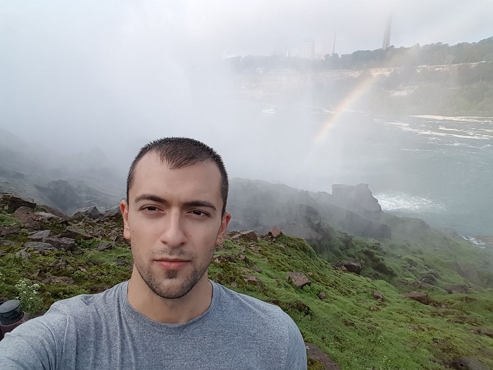

За мен
 Привет! Казвам се Георги Драганов и съм на 23 години. Роден съм в Бургас и от 1 до 7 клас съм учил в ОУ"П.Р Славейков", от 7 до 12 клас съм учил в ПГЕЕ"Константин Фотинов", където изучавах компютърна техника и технологии с Английски език. Предимно се изучавахме хардуерната част на компютрите. След това висшето ми образование беше в ВХТИ "Асен Златаров", където изучавах Туризъм. В момента продължавам да работя като барман в р-т"Хепи", надявайки се някой ден да започна да работя като програмист.